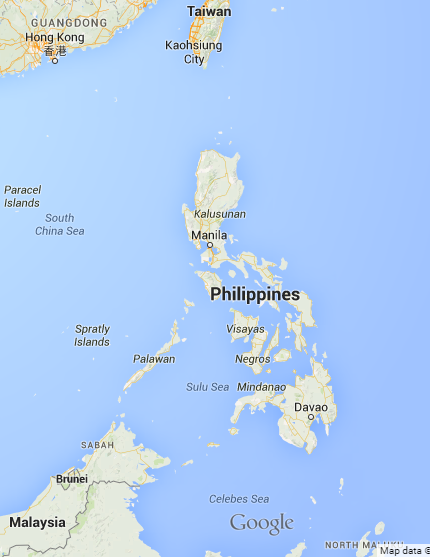

Want to learn a few things about
Philippines?
Philippines is a country located at the South East Asia sitting below Taiwan and east of Malaysia.

It's capital city is 


Manila : /məˈnɪlə/
Filipino's are absolute food lovers.


Some of our famous food are adobo and sinigang.
We have 11 international airports and 10 commercial airlines.